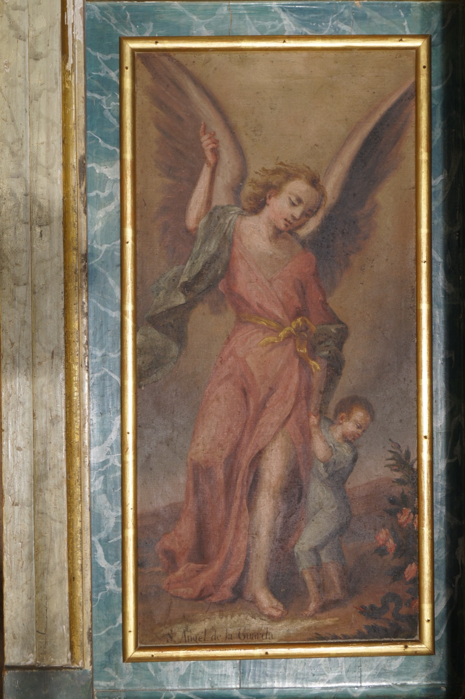

El ángel de la guarda o ángel custodio es un ángel que Dios concede a cada persona, sea creyente o no, para protegerla y acompañarla durante toda la vida. La creencia en la existencia de seres celestiales protectores no es exclusiva del cristianismo y se remonta al menos al Imperio Asirio y a la Grecia clásica. En la Iglesia Católica, la devoción al ángel de la guarda se popularizó especialmente a partir del siglo XVI. Ahora bien, su existencia no es dogma de fe de la Iglesia Católica, aunque es afirmada por el Catecismo.
En esta pintura, el ángel de la guarda aparece representado como un joven de aspecto andrógino, con unas grandes alas que simbolizan su origen celestial y vestido con una túnica rosa pálido que transmite suavidad y pureza. Su protegido es un niño indefenso, al que lleva de la mano, y la serpiente oscura a los pies del niño representa el peligro del que lo protege. El ángel señala el cielo con el dedo índice, un gesto que nos recuerda que su propósito último es guiar el alma de su protegido hacia la salvación eterna.